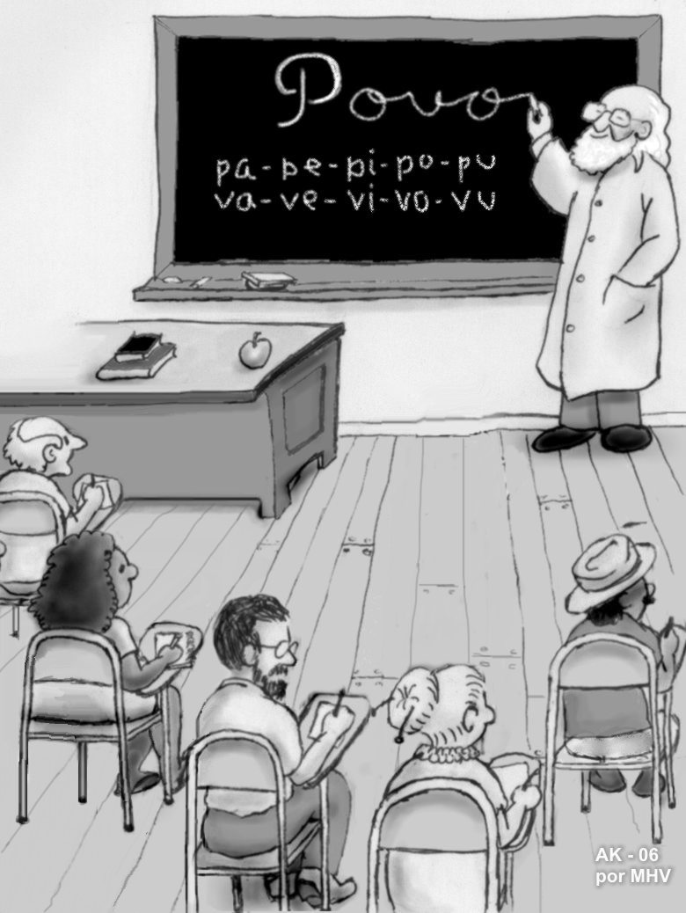
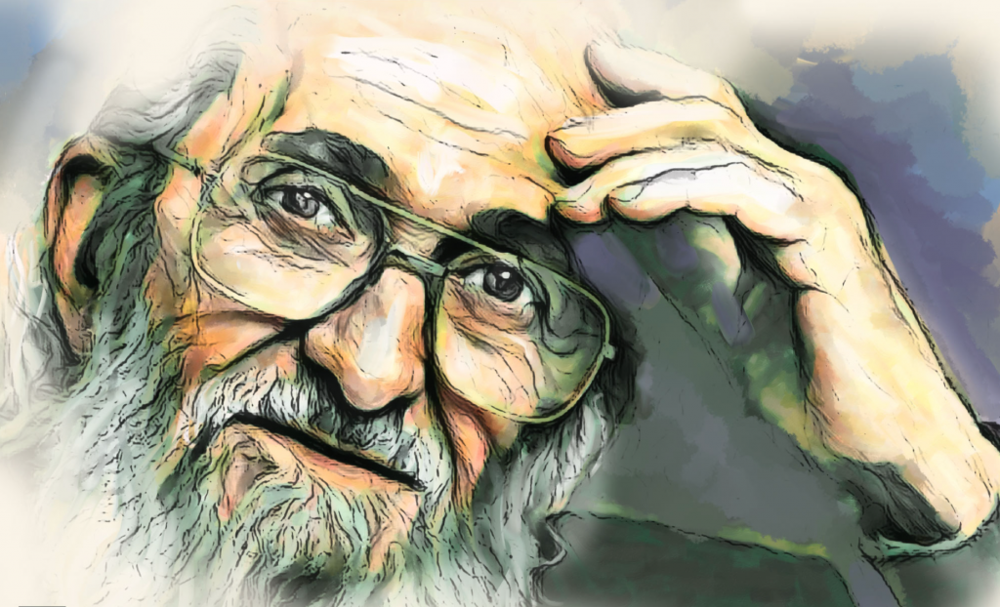
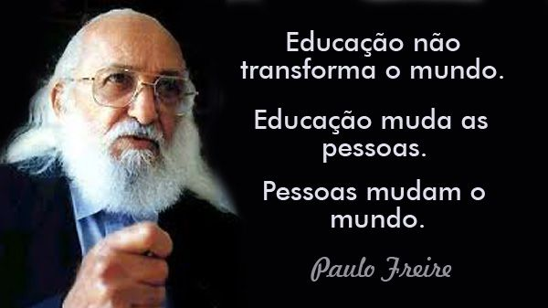

Semana Paulo Freire
Ideologia

-
A metodologia de Paulo Freire consiste
em uma maneira de educar conectada ao
cotidiano dos estudantes e às
experiências que eles têm e
por isso, também ligado à política.
Qual o olhar de Paulo Freire
para com
os alunos?
Sua filosofia baseia-se no diálogo
entre professor e aluno, procurando
transformar o estudante em um aprendiz
ativo. Nesse sentido, ele criticava os
métodos de ensino em que o professor era
tido como o detentor de todo o
conhecimento, e o aluno apenas um
"depositório" o que ele chamava de
"educação bancária". Ele defende uma
educação que incentive a criticidade do
aluno, indo além do português e da matemática.


O que Paulo Freire fala
sobre a
educação
infantil?
Pensar Freire na Educação
Infantil é compreender
que a educação é
permanente vida, não
apenas preparar para
viver, mas, em uma
constante leitura do
mundo, cada vez mais
crítica.
Frases
- “Se a educação sozinha não transforma a sociedade, sem ela tampouco a sociedade muda.”
- “Ninguém nasce feito, é experimentando-nos no mundo que nós nos fazemos.”
- “Não há ensino sem pesquisa e pesquisa sem ensino.”
- “Ensinar não é transferir conhecimento, mas criar as possibilidades para a sua própria produção ou a sua construção.”
- “A educação é um ato de amor, por isso, um ato de coragem. Não pode temer o debate. A análise da realidade.
Não pode fugir à discussão criadora, sob pena de ser uma farsa.”
- Quando a educação não é libertadora, o sonho do oprimido é ser o opressor.
- A Educação, qualquer que seja ela, é sempre uma teoria do conhecimento posta em prática.
...